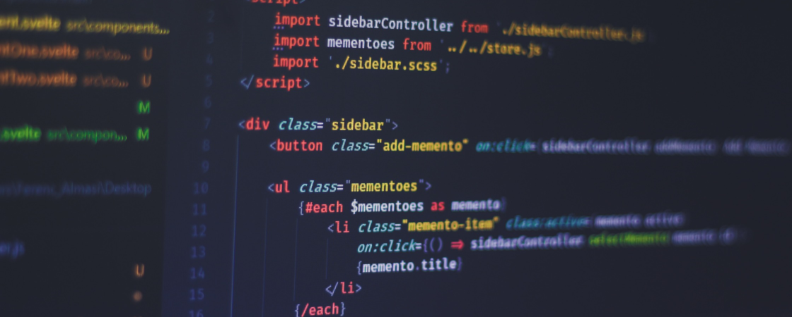

<section id="articleView">
  <div class="dashboard-content">
    <div class="dashboard-content-header view-header">
      <div class="dashboard-content-header-title">
        <h1>View Article</h1>
      </div>
      <div class="btn-group">
        <div class="login-btn">
          <a href="" class="theme-btn edit">Edit</a>
        </div>
        <div class="login-btn">
          <a href="" class="theme-btn delete">Delete</a>
        </div>
      </div>
    </div>
    <div class="blog-content">
      <p class="title">
        How to Create a React Project from Scratch: Crafting Your Web App Dream
      </p>
      <div class="author-date">
        
        <div class="date">
          <p>Eloi Chrysanthe<br /><span>Jan 17, 2024</span></p>
        </div>
      </div>
      
      <br />
      <br />
      <p class="details">
        So, you've heard the buzz about React and you're itching to build your
        own app with this powerful JavaScript library. But where do you start?
        Fear not, aspiring web dev, for this guide will take you step-by-step
        through the process of creating a React project from scratch, even if
        you're a total beginner. <br /><br />1. Setting the Stage: Environment
        Setup <br /><br />
        Before we dive into React code, let's make sure we have the right tools
        in the toolbox. This means installing Node.js, which forms the
        foundation for running React projects. Head over to Node.js's website
        and grab the latest version. Once installed, open your terminal and
        check if it's functioning by running node -v. You should see the
        installed version printed back.
      </p>
    </div>
  </div>
</section>
